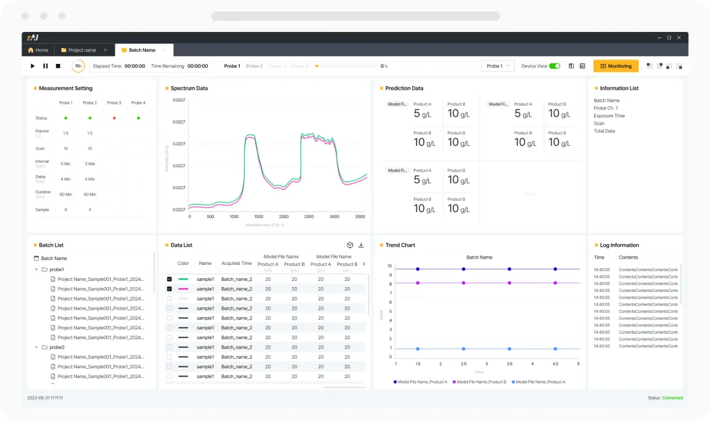
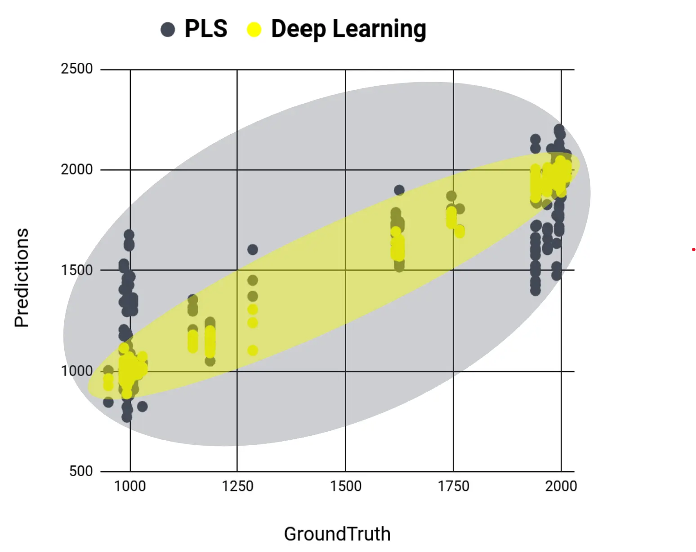
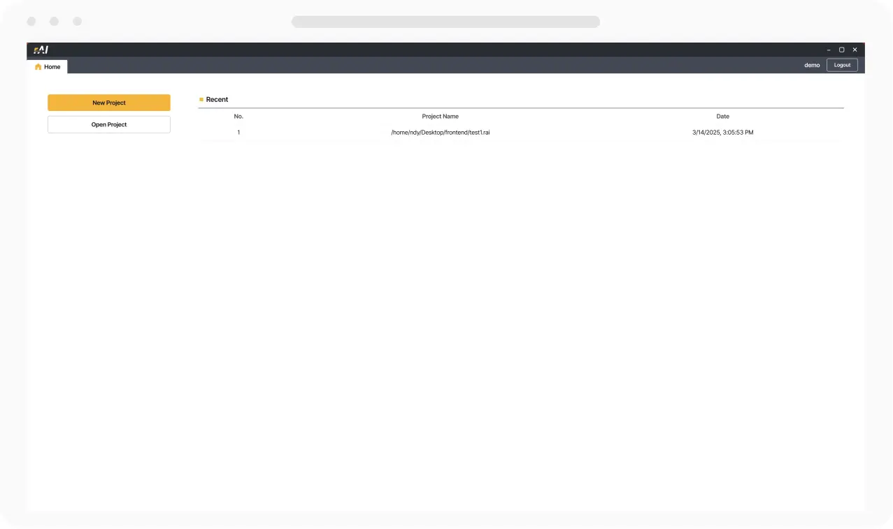

A platform supporting real-time PAT operation, model lifecycle management, validation documentation, and regulatory readiness for pharmaceutical and biopharmaceutical GMP manufacturing.
ACTUAL PRODUCT UIRuntime visibility, built for review.
CONTROLLED FLOWData → Model → Evidence
RuntimerAI-GO
LifecyclerAI-Q
RAI / 2026
01Runtime Operation
02Model Lifecycle
03Controlled Evidence
04Validation Support
ONE PLATFORM STRUCTURE
Connect fragmented PAT work through one governed flow.
When instrument data, analytical models, production runtime, and operational records remain disconnected, traceability and validation burdens increase. rAI provides a structure that connects the role and evidence of each stage.
01PAT SPECTRUMInstrument signal
02PAT DATAControlled input
03MODELReview & release
04RUNTIMEOperate & monitor
05CONTROLLED RECORDTraceable evidence
06VALIDATION GATEVerify & accept
07AUDIT READINESSReview & defend
01OPERATE
rAI-GO
Real-time PAT Runtime
Supports the acquisition and storage of Raman, NIR, and other spectral instrument data in a runtime environment, together with the execution of reviewed prediction models and management of operational records.
Supports lifecycle governance connecting model artifacts from SIMCA or another analytical engine with candidate intake, independent review, approved versions, and deployment evidence.
The final integration scope is defined according to the instruments, interfaces, product edition, and project configuration.
ACTUAL PRODUCT INTERFACES
More than a concept. Interfaces designed for operation.
Actual product interfaces previously published on the corporate website illustrate how runtime operation connects with model lifecycle management. Core functions remain accessible while key evidence is retained in a reviewable structure.
01 / OPERATE
rAI-GO
Real-time PAT Runtime
Review real-time spectra, prediction values, instrument status, and execution records in one interface while tracing the information needed for operational decisions.
Integrated monitoring of spectra and prediction results
Visibility into instrument, execution, and operating status
Project-based record and review workflows
RUNTIME MONITORING

02 / GOVERN
rAI-Q
Modeling & Model Lifecycle
Model calculation is performed in a project-approved analytical engine such as SIMCA; rAI-Q supports structuring lifecycle information from candidate intake through independent review, approved versions, and deployment evidence.
Candidate intake from an rAI Pipeline, SIMCA .usp, or external model file
SHA-256 verification information with metric and acceptance snapshots
Reviewer decision, re-authenticated signature, Version Tree, and report/package evidence
MODEL LIFECYCLE WORKSPACE
NEW / SUPPLIED POC EVIDENCE
SIMCA Model Governance PoC
Review the supplied-screen flow from Candidate Model to Review Request, Authenticated Decision, Approved Version, and Controlled Package.
Separated Modeler and Reviewer perspectives
SHA-256, metadata, and performance-target snapshots
Approved versions, reports, and signed export-package evidence
Explore PoC evidence screens ↗PoC screens; current commercial scope is confirmed by edition, license, validation status, and project agreement.
REPRESENTATIVE WORKSPACE VIEWS
Model-development evidence in a reviewable context.
Supplied representative views illustrate how data review, model-development evidence, and results review can be connected.
01Data ReviewRepresentative spectral data input and review02Preprocessing ReviewRepresentative raw and processed data review03Modeling EvidenceRepresentative PLS configuration and performance evidence04Outlier ReviewRepresentative outlier and performance comparison05Prediction ReviewRepresentative prediction results and history review
CONCEPT / EXAMPLE
Connect analytical concepts and comparisons to the review context.
These are supplied conceptual and comparison examples. Current commercial scope is confirmed by edition, analytical engine, and project agreement.
A
Analytical concept exampleA supplied concept view of relationships between spectral data and additional features

B
Comparison plot exampleA supplied example comparing prediction distributions across analytical approaches
USABILITY & REVIEW
Easy to start. Detailed enough to review.

EASY TO STARTSimple project entryA focused starting point for creating and opening projectsPOWERFUL TO REVIEWIntegrated prediction reviewPipeline summary, model metrics, and prediction results in one review view
The images are supplied representative or reference materials. Actual functions, terminology, modeling engine, approval workflow, and layout are confirmed by product version, edition, license, and project scope.
PART 11 COMPLIANCE MODULE
Compliance is not a badge. It is an operating structure.
Supports electronic records, electronic signatures, audit trails, user access management, approval workflows, and change history with consideration for FDA 21 CFR Part 11 and EU GMP Annex 11 requirements.
REGULATORY BOUNDARYFinal applicability and compliance determinations require customer review and approval based on intended use, approved procedures, risk assessment, and the customer's QMS.
01
Electronic Records
Management of reviewable electronic records
02
Electronic Signatures
Electronic signature workflows configured to the project scope
03
Audit Trail
Traceable records of defined system events
04
Role & Access
Role-based access control and segregation-of-duties principles
05
Approval Workflow
Review and approval stages with change history
06
Validation Support
Risk-based CSV and validation deliverable support
VALIDATION & LIFECYCLE SERVICES
Beyond documents: a reviewable evidence structure.
Services are configured in stages, from documentation through GMP-PAT validation and full implementation, according to the adoption scope and regulatory requirements.
01
Documentation
Validation Documentation Package
Establishes a connected document structure covering planning, requirements, risk assessment, testing, traceability, and summary reporting.
Infrastructure, account, SOP, and intended use approval
PQ and final validation acceptance
Manufacturing and quality decisions
SCOPE
Applies to implementation, configuration, documentation, and test-support activities defined in the approved SOW and project plan.
EXCLUSIONS
Customer infrastructure approval, SOP approval, PQ, final validation acceptance, and manufacturing or quality decisions remain customer responsibilities.
MAINTENANCE
Basic maintenance is included for the first year after initial implementation. Annual maintenance is contracted separately from year two.
REGULATORY STATEMENT
rAI-SW provides functions and validation-support structures that consider relevant GMP and electronic-record requirements. Final suitability depends on the customer's intended use, approved procedures, and QMS.
rAI
ABOUT rAI-SW
GMP-oriented Digital PAT Platform.
rAI-SW is a specialized platform company connecting PAT data with governed manufacturing operation, model lifecycle management, validation evidence, and audit readiness for pharmaceutical and biopharmaceutical organizations.
OPERATIONALGOVERNEDTRACEABLEADOPTABLE
BUSINESS INQUIRY
Discuss your GMP-PAT implementation scope.
We review your current instrument environment, model operating approach, validation scope, and implementation timeline.
Open Business Inquiry ↗Paid PoC pilot and implementation scope are defined through separate consultation.